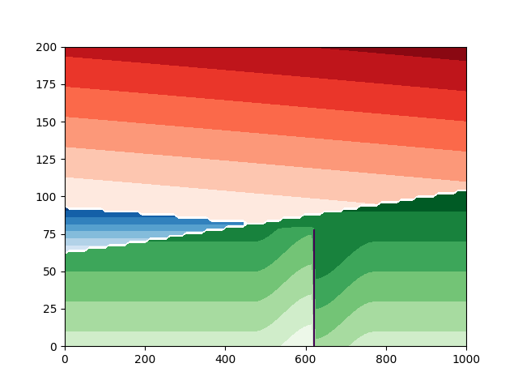

Note
Go to the end to download the full example code.
1h. Unconformities and fault#
This tutorial will demonstrate how to add unconformities to a mode using LoopStructural.
<matplotlib.contour.QuadContourSet object at 0x7fd8e5790250>
import numpy as np
import pandas as pd
from LoopStructural import GeologicalModel
import matplotlib.pyplot as plt
data = pd.DataFrame(
[
[100, 100, 150, 0.17, 0, 0.98, 0, "strati"],
[100, 100, 170, 0, 0, 0.86, 0, "strati3"],
[100, 100, 100, 0, 0, 1, 0, "strati2"],
[100, 100, 50, 0, 0, 1, 0, "nconf"],
[100, 100, 50, 0, 0, 1, 0, "strati4"],
[700, 100, 190, 1, 0, 0, np.nan, "fault"],
],
columns=["X", "Y", "Z", "nx", "ny", "nz", "val", "feature_name"],
)
model = GeologicalModel(np.zeros(3), np.array([1000, 1000, 200]))
model.data = data
model.create_and_add_foliation("strati2", buffer=0.0)
model.add_unconformity(model["strati2"], 0)
model.create_and_add_fault(
"fault",
50,
minor_axis=300,
major_axis=500,
intermediate_axis=300,
fault_center=[700, 500, 0],
)
model.create_and_add_foliation("strati", buffer=0.0)
model.add_unconformity(model["strati"], 0)
model.create_and_add_foliation("strati3", buffer=0.0)
model.create_and_add_foliation("nconf", buffer=0.0)
model.add_onlap_unconformity(model["nconf"], 0)
model.create_and_add_foliation("strati4")
stratigraphic_columns = {
"strati4": {"series4": {"min": -np.inf, "max": np.inf, "id": 5}},
"strati2": {
"series1": {"min": 0.0, "max": 2.0, "id": 0, "colour": "red"},
"series2": {"min": 2.0, "max": 5.0, "id": 1, "colour": "red"},
"series3": {"min": 5.0, "max": 10.0, "id": 2, "colour": "red"},
},
"strati": {
"series2": {"min": -np.inf, "max": -100, "id": 3, "colour": "blue"},
"series3": {"min": -100, "max": np.inf, "id": 4, "colour": "blue"},
},
}
model.set_stratigraphic_column(stratigraphic_columns)
xx, zz = np.meshgrid(np.linspace(0, 1000, 100), np.linspace(0, 200, 100))
yy = np.zeros_like(xx) + 500
points = np.array([xx.flatten(), yy.flatten(), zz.flatten()]).T
val = model["strati"].evaluate_value(points)
val2 = model["strati2"].evaluate_value(points)
val3 = model["strati3"].evaluate_value(points)
val4 = model["strati4"].evaluate_value(points)
uf = model["strati4"].regions[0](points)
fval = model['fault'].evaluate_value(points)
plt.contourf(val.reshape((100, 100)), extent=(0, 1000, 0, 200), cmap='viridis')
plt.contourf(val2.reshape((100, 100)), extent=(0, 1000, 0, 200), cmap='Reds')
plt.contourf(val3.reshape((100, 100)), extent=(0, 1000, 0, 200), cmap='Blues')
plt.contourf(val4.reshape((100, 100)), extent=(0, 1000, 0, 200), cmap='Greens')
plt.contour(fval.reshape((100, 100)), [0], extent=(0, 1000, 0, 200))
Total running time of the script: (0 minutes 7.868 seconds)